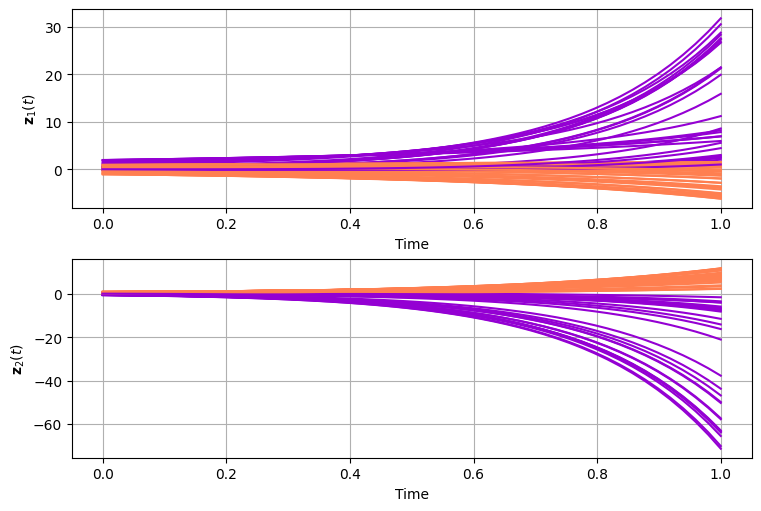

Ordinalry Differential Equations or ODEs are equations with a single indipendent varlaible (usually called time \(t\)) and one or more derivatives of functions defined in terms of the indipendent variable. Formally,
In the general term, the solution to an ODE involve to computetion of the antiderivative of \(f\), in other words the integral of \(f\). As the integral of any function involve an arbitrary constant, usually defined as \(C\), there is the need to specify an initial condition\(x_0\) to guarantee that the solution of the ODE is unique:
Note that, given the inital state \(x_0\) and a set of points in time \(\{ t_0, ..., t_N\}\), the objective is to obtain the state solution \(x_{0:N} \equiv \{ x_0, ..., x_N\}\). Unfortunetly, solving the above integral analytically is possible only for a limited amount of differential functions. Therefore, numerical solvers are used in practice.
As overmentioned the solution depend on the initial state of the system. Following there is a demonstration of how the system will behave if you used different starting points.
Neural ODEs are a family of ODEs for which the vector-field \(f(x_t, t)\) is defined by a neural network. As such, \(f(x_t, t)\) is both differentiable and learnable. Thus, given a set of observation \(y_{0:N}\) from a unknwon dynamical system, we can used it to learn a model of the evolution of the system’s dynamics.
Problem Formulation
Given a dataset containing noise observation \(y_n\) where each observation is the perturbation of an unknown state \(x_n\) generated by an unknown underling dynamics \(f_{true}\):
The objective is to learn a neural network \(f_\theta\) that matches the unknown dynamics:
\[
f_\theta \approx f_{true}.
\]
from torch import nn, Tensorfrom torchdyn.core import NeuralODEclass VectorField(nn.Module):def__init__(self, d: int):"""d - ODE dimensionality"""super().__init__()self.d = dself._f = nn.Sequential( nn.Linear(d, 20), nn.ReLU(), nn.Linear(20, 20), nn.ReLU(), nn.Linear(20, d), )self.reset_parameter()def reset_parameter(self):for name, param inself.named_parameters():if"bias"in name: nn.init.constant_(param, 0.0)else: nn.init.xavier_uniform_(param, gain=nn.init.calculate_gain("relu"))def forward(self, t: Tensor, x: Tensor, **kwargs):"""Forward integrates the NODE system and returns state solutions Input ts - [T] time points x0 - [N,d] initial value Returns X - [N,d] forward simulated states """returnself._f(x)# define vector-fieldfield = VectorField(2).to(device)model = NeuralODE(field, solver="euler").to(device)# let's compute the integral of our neural net!x0 = torch.tensor([[1.0, 0.0]]).float().to(device)t_span = torch.linspace(0.0, 1.0, 100).to(device)t_eval, trajectory_init = model(x0, t_span)plot_ode( t_eval.detach().cpu().numpy(), trajectory_init.detach().cpu().numpy(), field.forward,)
VDP Learning
In the previous example \(f_\theta\) is randomly initialized, thus the resulting vector-field does not exibit any interesting behaviour. As abovementioned, the objective is to learn such \(f_\theta\) from some observations \(y_n\). Getting a state solution \(x_n\) involve solving an ODE defined by \(f_\theta\). Similarly, optimizing \(\theta\) involves computing the gradinets w.r.t. \(x_n\). As differentiating through the ODE solver is computationally inefficent, the gradients of the paramters are obtained with the Adjoint State Method. Thus, we can adopt maximum-likelihood estimation (MLE) to train our neural ODE:
In order to train our \(f_\theta\), some observations of a systems are needed. Thus, next some noise observation are generated from the original VDP oscillator.
/tmp/ipykernel_2412/3053862232.py:52: UserWarning: Creating a tensor from a list of numpy.ndarrays is extremely slow. Please consider converting the list to a single numpy.ndarray with numpy.array() before converting to a tensor. (Triggered internally at /pytorch/torch/csrc/utils/tensor_new.cpp:253.)
t_spans = torch.tensor(t_spans).float()
Obtained a sample of trajectories we can train a model on it. Namely, the objective is to adjust the paramters of the vector field in such a way that given a starting point we simulate the dynamic of the system. Note that during training we can not leverage GPU parallelization trought batches as we need to solve a ODE at each step. However, it is possible to save memory by train on section of collected trajectories.
💡 Tip: For seamless cloud uploads and versioning, try installing [litmodels](https://pypi.org/project/litmodels/) to enable LitModelCheckpoint, which syncs automatically with the Lightning model registry.
GPU available: False, used: False
TPU available: False, using: 0 TPU cores
HPU available: False, using: 0 HPUs
/opt/hostedtoolcache/Python/3.10.18/x64/lib/python3.10/site-packages/pytorch_lightning/trainer/connectors/logger_connector/logger_connector.py:76: Starting from v1.9.0, `tensorboardX` has been removed as a dependency of the `pytorch_lightning` package, due to potential conflicts with other packages in the ML ecosystem. For this reason, `logger=True` will use `CSVLogger` as the default logger, unless the `tensorboard` or `tensorboardX` packages are found. Please `pip install lightning[extra]` or one of them to enable TensorBoard support by default
Following there is an animation that demonstare how the training process refine the underling vector field to produce always more accurate prediction of the system dinamics.
Classification Problem
Until now we have focus on problem that naturally fit the NeuralODE space, namly we focused on regression problem over trajectories of phisical system where the functional form of the dynamics is learned by a neural network. However, NeuralODEs are not strictly limited to solve regression problems. By assuming arbitrary time-steps: where \(t_0\) and \(t_1\) are respectively the starting and end time of the dynamic system transforming the input data \(x(t_0)\) into a representation \(x(t_1)\) that is usefull to solve a classification problem. NeuralODEs vector fields is limited to work on data of the same dimensionality, in other words \(x(t_0)\) and \(x(t_1) \in \mathbb{R}^n\). However, as NeuralODE are continuous and differentiable, they can be jointly trained with a linear classifier to solve the final task.
For example, given the dataset in ?@fig-half-moon-dataset; it is possible to define the following classifier:
Figure 1: Illustration the HalfMoon dataset used for training.
from half_moon import HalfMoonDatasetfrom torch.utils.data import DataLoaderdataset = HalfMoonDataset(1000)train_size =int(0.8*len(dataset))val_size =int(0.1*len(dataset))test_size =len(dataset) - train_size - val_sizetrain_dataset, val_dataset, test_dataset = torch.utils.data.random_split( dataset, [train_size, val_size, test_size])epochs =15# number of optimization iterationslr =1e-3model.reset_parameters()# we can use batch_size since we are using the sampe time span for all the examplesbatch_size =64train_dataloader = DataLoader(train_dataset, batch_size=batch_size)valid_dataloader = DataLoader(val_dataset, batch_size=batch_size)test_dataloader = DataLoader(test_dataset, batch_size=batch_size)class HalfMoonLearner(pl.LightningModule):def__init__(self, model: nn.Module, lr: float, ):super().__init__()self.model, self.lr = model, lrself.loss = nn.BCEWithLogitsLoss()self.epoch_images = []self.t_span = torch.linspace(0.0, 1.0, 50)self.y_n = y_ndef forward(self, x, t_span, **kwargs):returnself.model(x, t_span, **kwargs)def training_step(self, batch, batch_idx): x0 = batch["data"] y = batch["label"].unsqueeze(-1) y_hat =self.model(x0, self.t_span) loss =self.loss(y_hat, y)self.log("train_loss", loss, on_step=True, on_epoch=True, prog_bar=True)return {"loss": loss}def configure_optimizers(self):return torch.optim.AdamW(self.model.parameters(), lr=self.lr)half_moon_learner = HalfMoonLearner( model, lr=lr,)trainer = pl.Trainer( gradient_clip_val=1.0, gradient_clip_algorithm="norm", max_epochs=epochs,)# trainer.fit(half_moon_learner, train_dataloader)
💡 Tip: For seamless cloud uploads and versioning, try installing [litmodels](https://pypi.org/project/litmodels/) to enable LitModelCheckpoint, which syncs automatically with the Lightning model registry.
GPU available: False, used: False
TPU available: False, using: 0 TPU cores
HPU available: False, using: 0 HPUs
Finally, we can inspect the learned trajectories for classification as we did for the regression problem.

Figure 2: Learned trajectories for a classification problem. Note that the graph represents the evolution trought time each dimentions of the input \(x\). I.e., it is the evolution from \(x(t_0)\) to \(x(t_1)\), but this time it is learned purely based on the class lable and not based on a sampled trajectory.